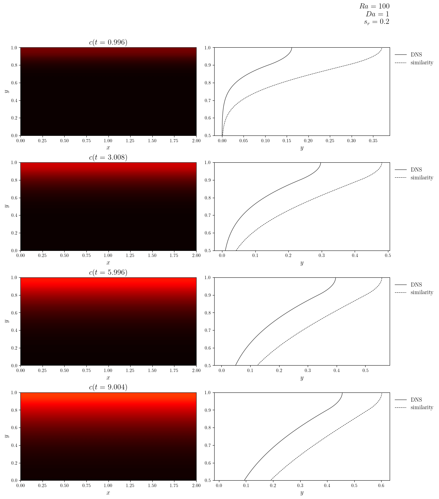
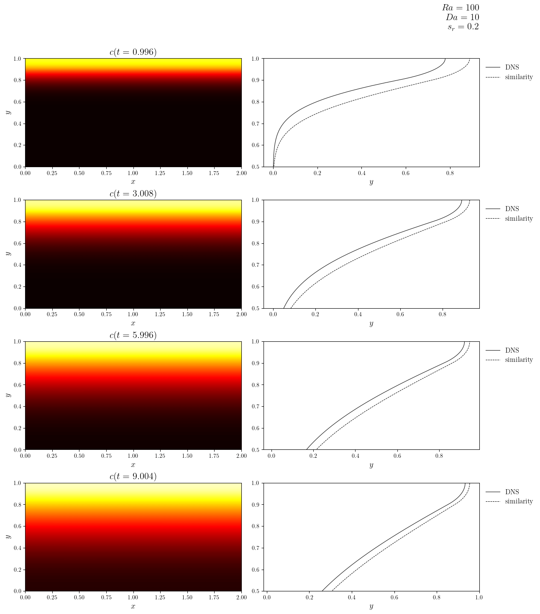
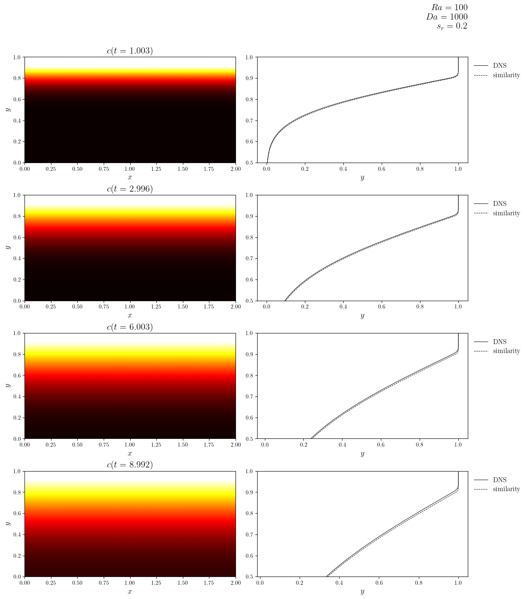
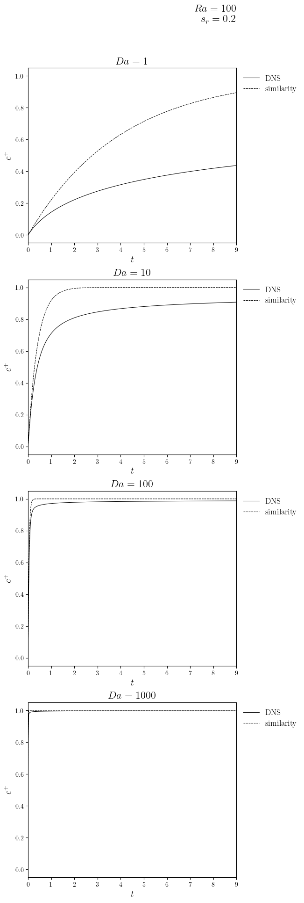
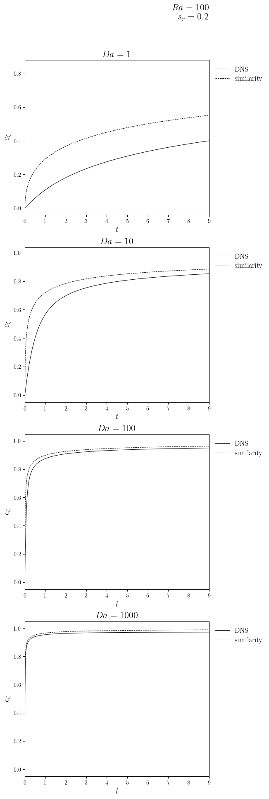

Similarity early-time model#
Load the simulations#
from ipynb_boilerplate import *
from crocodil.theory.system_a.early import EarlyTimeSimilarityModel
AGG = True
if AGG: configure_matplotlib(backend='Agg')
SAVE = True
SR = 0.2
PARAM_KEYS = ('Ra', 'Da')
PARAMS_FIXED = SYSTEM_A_REFERENCE.replace(sr=SR).remove(*PARAM_KEYS)
simulations_batch = GridSimulationFromNPZ.dict_from_dir_paths(
PARAM_KEYS,
SIM_DIR_PATHS,
('c', 's'),
('f', 'mD', 'mC', 'uRMS'),
PARAMS_FIXED,
lazy=True,
sorting=lambda d: dict(sorted(d.items(), reverse=False)),
)
save_fig = partial(
save_figure,
dir_path=DIR_FIGS,
prefix='EarlySimilarity',
pickle=True,
close=AGG,
file_ext=('svg', 'pdf', 'png'),
) if SAVE else pass_anything
print('Before parameter batching')
for i in SIM_DIR_PATHS: print(i)
print('After parameter batching')
for i in simulations_batch.values(): print(i.dir_path)
Before parameter batching
./data__c_stabilization=None|c_limits=True/t_stop=120.0__Ra=100.0|Da=1.0|epsilon=0.01|zeta0=0.9|sr=0.2|cr=0.0|aspect=2.0|Nx=160|Ny=160__8cdc0d7deee27009/
./data__c_stabilization=None|c_limits=True/t_stop=120.0__Ra=100.0|Da=10.0|epsilon=0.01|zeta0=0.9|sr=0.2|cr=0.0|aspect=2.0|Nx=160|Ny=160__f1e8b107b29abbbb/
./data__c_stabilization=None|c_limits=True/t_stop=120.0__Ra=100.0|Da=100.0|epsilon=0.01|zeta0=0.9|sr=0.2|cr=0.0|aspect=2.0|Nx=160|Ny=160__5e822ff46ee05fa4/
./data__c_stabilization=None|c_limits=True/t_stop=120.0__Ra=100.0|Da=1000.0|epsilon=0.01|zeta0=0.9|sr=0.2|cr=0.0|aspect=2.0|Nx=160|Ny=160__3823d90f6e03a6fd/
./data__c_stabilization=None|c_limits=True/t_stop=120.0__Ra=500.0|Da=1.0|epsilon=0.01|zeta0=0.9|sr=0.2|cr=0.0|aspect=2.0|Nx=160|Ny=160__795c9d7125905bce/
./data__c_stabilization=None|c_limits=True/t_stop=120.0__Ra=500.0|Da=10.0|epsilon=0.01|zeta0=0.9|sr=0.2|cr=0.0|aspect=2.0|Nx=160|Ny=160__c4deca4f8fe27111/
./data__c_stabilization=None|c_limits=True/t_stop=120.0__Ra=500.0|Da=100.0|epsilon=0.01|zeta0=0.9|sr=0.2|cr=0.0|aspect=2.0|Nx=160|Ny=160__cdefe0d77fe0ec33/
./data__c_stabilization=None|c_limits=True/t_stop=120.0__Ra=500.0|Da=1000.0|epsilon=0.01|zeta0=0.9|sr=0.2|cr=0.0|aspect=2.0|Nx=160|Ny=160__e5615d686d9c78ab/
./data__c_stabilization=None|c_limits=True/t_stop=120.0__Ra=1000.0|Da=1.0|epsilon=0.01|zeta0=0.9|sr=0.2|cr=0.0|aspect=2.0|Nx=200|Ny=200__9563b4a91df22147/
./data__c_stabilization=None|c_limits=True/t_stop=120.0__Ra=1000.0|Da=10.0|epsilon=0.01|zeta0=0.9|sr=0.2|cr=0.0|aspect=2.0|Nx=200|Ny=200__6960ce4014553e45/
./data__c_stabilization=None|c_limits=True/t_stop=120.0__Ra=1000.0|Da=100.0|epsilon=0.01|zeta0=0.9|sr=0.1|cr=0.0|aspect=2.0|Nx=200|Ny=200__2fd4dc718af82cc4/
./data__c_stabilization=None|c_limits=True/t_stop=120.0__Ra=1000.0|Da=100.0|epsilon=0.01|zeta0=0.9|sr=0.2|cr=0.0|aspect=2.0|Nx=200|Ny=200__34ee6f0aa42efdfd/
./data__c_stabilization=None|c_limits=True/t_stop=120.0__Ra=1000.0|Da=100.0|epsilon=0.01|zeta0=0.9|sr=0.05|cr=0.0|aspect=2.0|Nx=200|Ny=200__49e14ce88373996e/
./data__c_stabilization=None|c_limits=True/t_stop=120.0__Ra=1000.0|Da=1000.0|epsilon=0.01|zeta0=0.9|sr=0.2|cr=0.0|aspect=2.0|Nx=200|Ny=200__476f009e5105f01c/
./data__c_stabilization=None|c_limits=True/t_stop=120.0__Ra=2000.0|Da=1.0|epsilon=0.01|zeta0=0.9|sr=0.2|cr=0.0|aspect=2.0|Nx=200|Ny=200__7e04bdb402f238f0/
./data__c_stabilization=None|c_limits=True/t_stop=120.0__Ra=2000.0|Da=10.0|epsilon=0.01|zeta0=0.9|sr=0.2|cr=0.0|aspect=2.0|Nx=200|Ny=200__9e9866c2e47fb0c9/
./data__c_stabilization=None|c_limits=True/t_stop=120.0__Ra=2000.0|Da=100.0|epsilon=0.01|zeta0=0.9|sr=0.2|cr=0.0|aspect=2.0|Nx=200|Ny=200__b6e58402b2d5afaf/
./data__c_stabilization=None|c_limits=True/t_stop=120.0__Ra=2000.0|Da=1000.0|epsilon=0.01|zeta0=0.9|sr=0.2|cr=0.0|aspect=2.0|Nx=200|Ny=200__58972afbae9e685a/
After parameter batching
./data__c_stabilization=None|c_limits=True/t_stop=120.0__Ra=100.0|Da=1.0|epsilon=0.01|zeta0=0.9|sr=0.2|cr=0.0|aspect=2.0|Nx=160|Ny=160__8cdc0d7deee27009/
./data__c_stabilization=None|c_limits=True/t_stop=120.0__Ra=100.0|Da=10.0|epsilon=0.01|zeta0=0.9|sr=0.2|cr=0.0|aspect=2.0|Nx=160|Ny=160__f1e8b107b29abbbb/
./data__c_stabilization=None|c_limits=True/t_stop=120.0__Ra=100.0|Da=100.0|epsilon=0.01|zeta0=0.9|sr=0.2|cr=0.0|aspect=2.0|Nx=160|Ny=160__5e822ff46ee05fa4/
./data__c_stabilization=None|c_limits=True/t_stop=120.0__Ra=100.0|Da=1000.0|epsilon=0.01|zeta0=0.9|sr=0.2|cr=0.0|aspect=2.0|Nx=160|Ny=160__3823d90f6e03a6fd/
./data__c_stabilization=None|c_limits=True/t_stop=120.0__Ra=500.0|Da=1.0|epsilon=0.01|zeta0=0.9|sr=0.2|cr=0.0|aspect=2.0|Nx=160|Ny=160__795c9d7125905bce/
./data__c_stabilization=None|c_limits=True/t_stop=120.0__Ra=500.0|Da=10.0|epsilon=0.01|zeta0=0.9|sr=0.2|cr=0.0|aspect=2.0|Nx=160|Ny=160__c4deca4f8fe27111/
./data__c_stabilization=None|c_limits=True/t_stop=120.0__Ra=500.0|Da=100.0|epsilon=0.01|zeta0=0.9|sr=0.2|cr=0.0|aspect=2.0|Nx=160|Ny=160__cdefe0d77fe0ec33/
./data__c_stabilization=None|c_limits=True/t_stop=120.0__Ra=500.0|Da=1000.0|epsilon=0.01|zeta0=0.9|sr=0.2|cr=0.0|aspect=2.0|Nx=160|Ny=160__e5615d686d9c78ab/
./data__c_stabilization=None|c_limits=True/t_stop=120.0__Ra=1000.0|Da=1.0|epsilon=0.01|zeta0=0.9|sr=0.2|cr=0.0|aspect=2.0|Nx=200|Ny=200__9563b4a91df22147/
./data__c_stabilization=None|c_limits=True/t_stop=120.0__Ra=1000.0|Da=10.0|epsilon=0.01|zeta0=0.9|sr=0.2|cr=0.0|aspect=2.0|Nx=200|Ny=200__6960ce4014553e45/
./data__c_stabilization=None|c_limits=True/t_stop=120.0__Ra=1000.0|Da=100.0|epsilon=0.01|zeta0=0.9|sr=0.2|cr=0.0|aspect=2.0|Nx=200|Ny=200__34ee6f0aa42efdfd/
./data__c_stabilization=None|c_limits=True/t_stop=120.0__Ra=1000.0|Da=1000.0|epsilon=0.01|zeta0=0.9|sr=0.2|cr=0.0|aspect=2.0|Nx=200|Ny=200__476f009e5105f01c/
./data__c_stabilization=None|c_limits=True/t_stop=120.0__Ra=2000.0|Da=1.0|epsilon=0.01|zeta0=0.9|sr=0.2|cr=0.0|aspect=2.0|Nx=200|Ny=200__7e04bdb402f238f0/
./data__c_stabilization=None|c_limits=True/t_stop=120.0__Ra=2000.0|Da=10.0|epsilon=0.01|zeta0=0.9|sr=0.2|cr=0.0|aspect=2.0|Nx=200|Ny=200__9e9866c2e47fb0c9/
./data__c_stabilization=None|c_limits=True/t_stop=120.0__Ra=2000.0|Da=100.0|epsilon=0.01|zeta0=0.9|sr=0.2|cr=0.0|aspect=2.0|Nx=200|Ny=200__b6e58402b2d5afaf/
./data__c_stabilization=None|c_limits=True/t_stop=120.0__Ra=2000.0|Da=1000.0|epsilon=0.01|zeta0=0.9|sr=0.2|cr=0.0|aspect=2.0|Nx=200|Ny=200__58972afbae9e685a/
Select the simulations#
Ra_target = 100.0
Da_targets = None
simulations = {
(Ra, Da): v for (Ra, Da), v in simulations_batch.items()
if include_prm(Ra, [Ra_target]) and include_prm(Da, Da_targets)
}
print('After parameter selection')
for i in simulations.values(): print(i.dir_path)
After parameter selection
./data__c_stabilization=None|c_limits=True/t_stop=120.0__Ra=100.0|Da=1.0|epsilon=0.01|zeta0=0.9|sr=0.2|cr=0.0|aspect=2.0|Nx=160|Ny=160__8cdc0d7deee27009/
./data__c_stabilization=None|c_limits=True/t_stop=120.0__Ra=100.0|Da=10.0|epsilon=0.01|zeta0=0.9|sr=0.2|cr=0.0|aspect=2.0|Nx=160|Ny=160__f1e8b107b29abbbb/
./data__c_stabilization=None|c_limits=True/t_stop=120.0__Ra=100.0|Da=100.0|epsilon=0.01|zeta0=0.9|sr=0.2|cr=0.0|aspect=2.0|Nx=160|Ny=160__5e822ff46ee05fa4/
./data__c_stabilization=None|c_limits=True/t_stop=120.0__Ra=100.0|Da=1000.0|epsilon=0.01|zeta0=0.9|sr=0.2|cr=0.0|aspect=2.0|Nx=160|Ny=160__3823d90f6e03a6fd/
Comparison of model with DNS#
t_targets = (1.0, 3.0, 6.0, 9.0)
legend_labels = ['DNS', 'similarity']
cPlus_lines, cZeta_lines, line_titles = [], [], []
for (Ra, Da), sim in simulations.items():
c = sim['c']
zeta0, sr, cr = sim['zeta0', 'sr', 'cr']
zeta0_index = as_index(c.mesh.y_axis, zeta0)
slcPlus = slice(zeta0_index, None)
asymp_model = EarlyTimeSimilarityModel(
c.time_series, c.mesh.y_axis, 1/Ra, Da, zeta0, sr, cr, infty=False,
)
cPlus = NPyConstantSeries(
average_grid(c.series, ('x', 'y'), (':', slcPlus)), c.time_series, 'cPlus',
)
cPlus_lines.append(
[(cPlus.time_series, cPlus.value_series), (asymp_model.t, asymp_model.cPlus)]
)
cZeta = NPyConstantSeries(
average_grid(c.series, 'x', (':', zeta0_index)), c.time_series, 'cZeta',
)
# cZeta_value_series = [np.mean(i.value[:, zeta0_index]) for i in c.series]
cZeta_lines.append(
[(cZeta.time_series, cZeta.value_series), (asymp_model.t, asymp_model.cZeta)]
)
line_titles.append(f"$Da={as_int_if_close(sim['Da'])}$")
mfig, axs_main, _ = create_multifigure(
n_rows=len(t_targets), n_cols=2,
suptitle='\n'.join((
f"$Ra={as_int_if_close(sim['Ra'])}$",
f"$Da={as_int_if_close(sim['Da'])}$",
f"$s_r={as_int_if_close(sim['sr'])}$",
))
)
for i, trg in enumerate(t_targets):
time_index = as_index(c.time_series, trg)
t_actual = c.time_series[time_index]
cAvgX = average_grid(use_cache=True)(c.series[time_index], 'x')
cModel = (asymp_model.y, asymp_model.c[time_index])
plot_colormap(
mfig,
axs_main[2 * i],
c.series[time_index],
colorbar=False,
title=f"$c(t={t_actual:.3f})$",
vmin=0,
vmax=1,
)
plot_line(
mfig,
axs_main[2 * i + 1],
[cAvgX, cModel],
legend_labels=legend_labels,
flip=True,
x_label='$y$',
y_lims=(0.5, 1.0),
)
save_fig(f'Ra={Ra}_Da={Da}_sr={sr}_c')(mfig, file_ext=('pdf', 'png'))
mfig_cPlus, axs_cPlus, _ = create_multifigure(
n_rows=len(simulations), n_cols=1,
suptitle='\n'.join((
f"$Ra={as_int_if_close(Ra_target)}$",
f"$s_r={as_int_if_close(SR)}$",
))
)
for ax, ln, ttl in zip(axs_cPlus, cPlus_lines, line_titles, strict=True):
plot_line(
mfig_cPlus,
ax,
ln,
x_label='$t$',
y_label='$c^+$',
title=ttl,
legend_labels=legend_labels,
x_lims=(0, max(t_targets)), #(0, 10 / asymp_model.Pi)
)
save_fig(f'Da_Ra={Ra_target}_sr={SR}_cPlus')(mfig_cPlus)
mfig_cZeta, axs_cZeta, _ = create_multifigure(
n_rows=len(simulations), n_cols=1,
suptitle='\n'.join((
f"$Ra={as_int_if_close(Ra_target)}$",
f"$s_r={as_int_if_close(SR)}$",
))
)
for ax, ln, ttl in zip(axs_cZeta, cZeta_lines, line_titles, strict=True):
plot_line(
mfig_cZeta,
ax,
ln,
x_label='$t$',
y_label='$c_\zeta$',
title=ttl,
legend_labels=legend_labels,
x_lims=(0, max(t_targets)),
)
save_fig(f'Da_Ra={Ra_target}_sr={SR}_cZeta')(mfig_cZeta)





The Kernel crashed while executing code in the current cell or a previous cell.
Please review the code in the cell(s) to identify a possible cause of the failure.
Click <a href='https://aka.ms/vscodeJupyterKernelCrash'>here</a> for more info.
View Jupyter <a href='command:jupyter.viewOutput'>log</a> for further details.